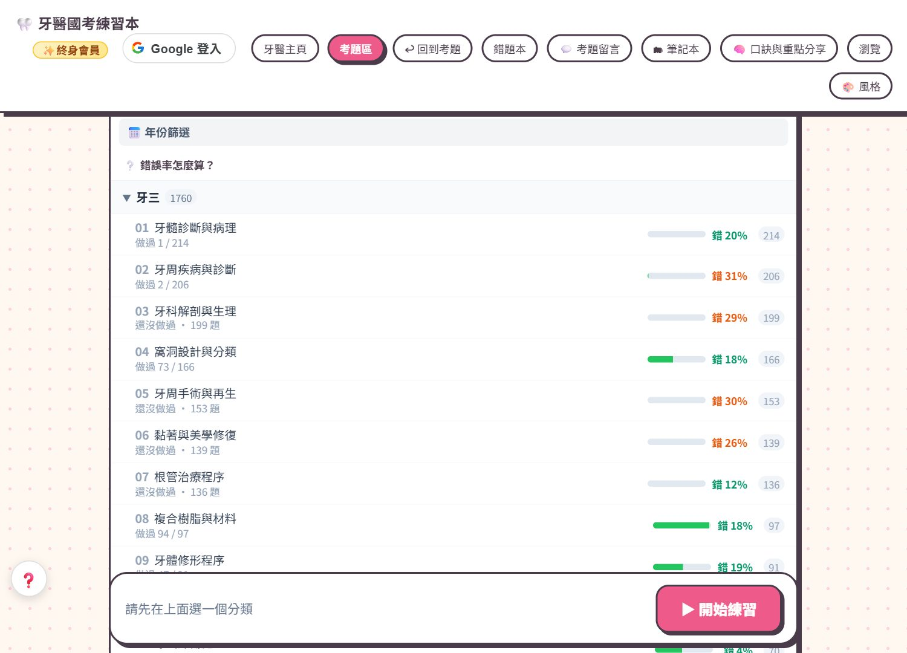
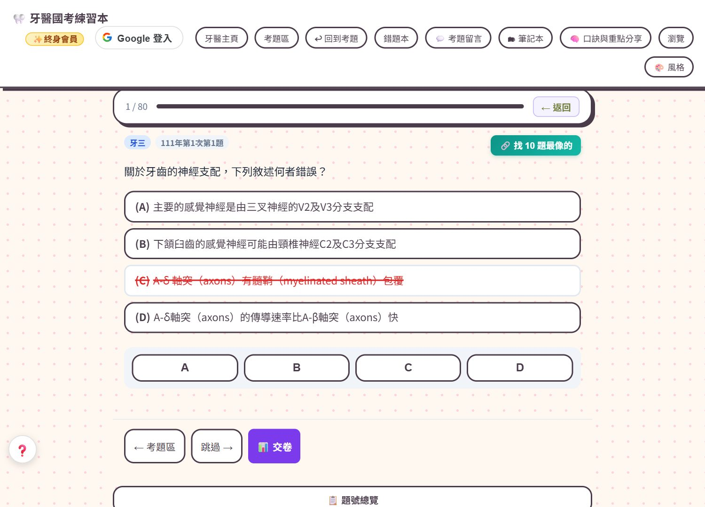
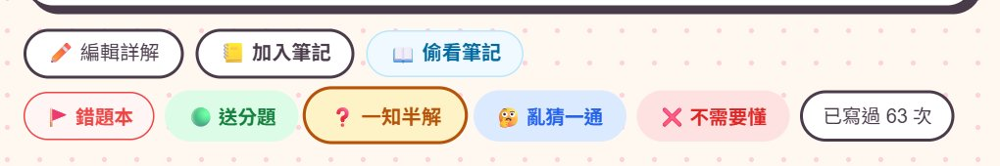
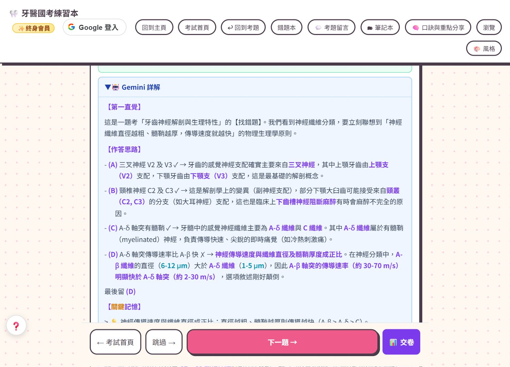
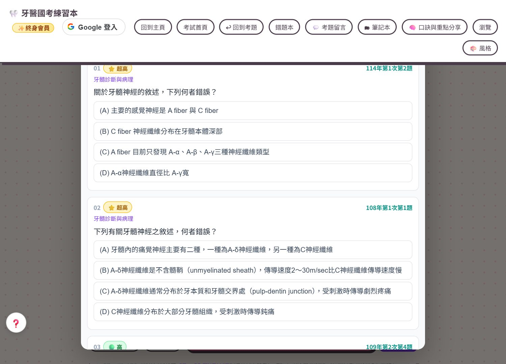
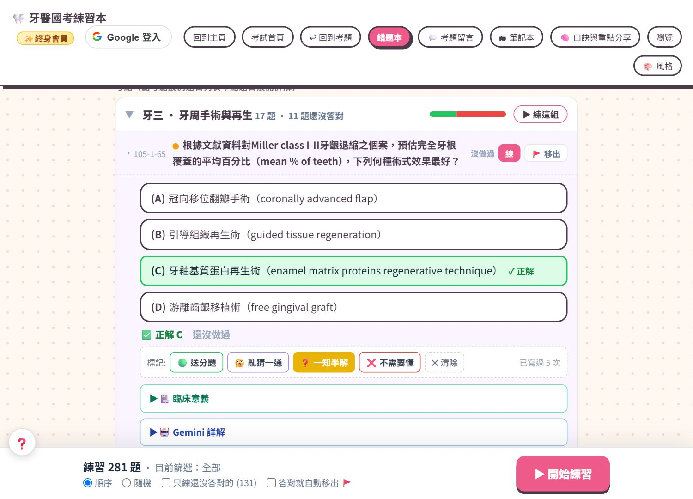
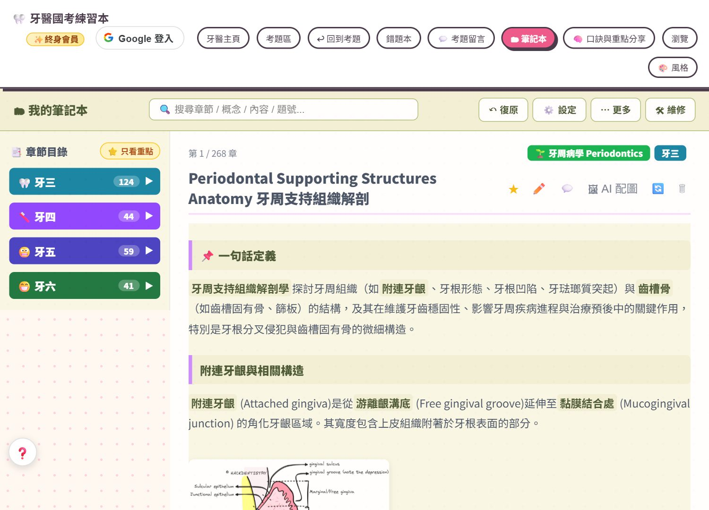
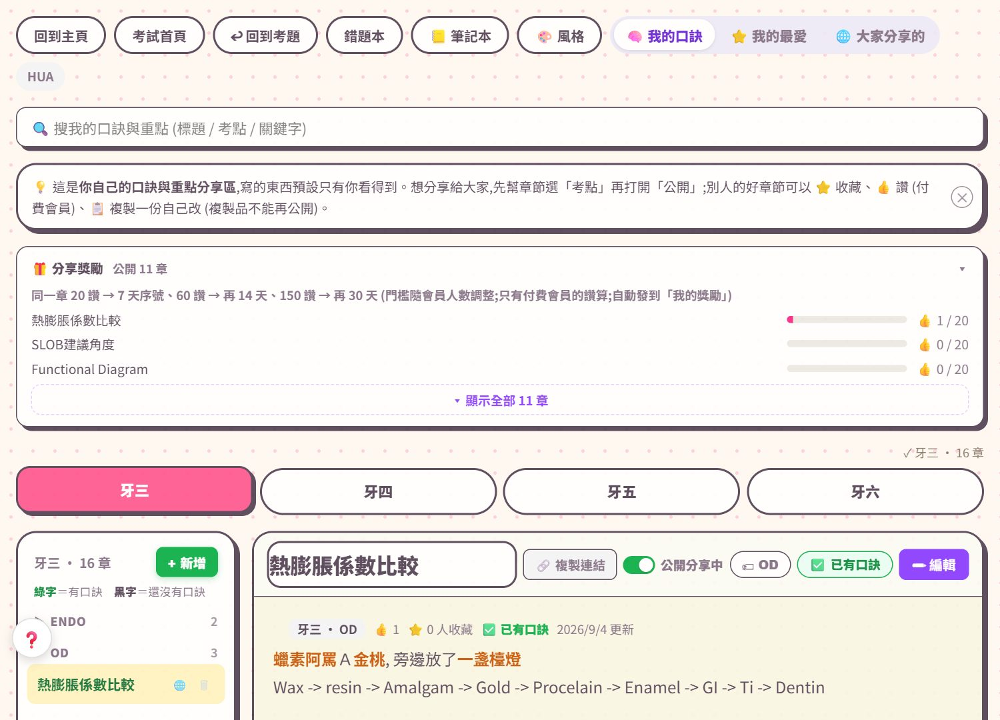
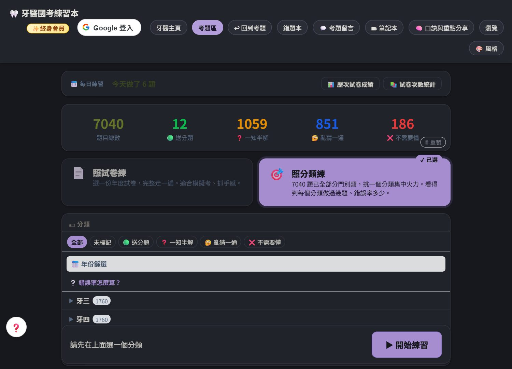

三分鐘看完就會用。不管您考的是哪一科，流程都一樣。
點首頁的考試卡片就會進到那個網站的登入畫面。建議用 Gmail 登入，按一下就進去、最快； 其他信箱也可以，我們會寄一封登入連結給您。 第一次登入自動送 7 天免費試用，全部功能都能用。
挑一個分類，把同一個觀念的題目一次寫熟。每一題答完有兩套 AI 詳解， 可以按標記（送分題／一知半解／亂猜一通／不需要懂），也可以一鍵收進錯題本或加進筆記。
手機、平板、電腦登入同一個帳號，作答紀錄、標記、筆記全部同步。 出門吃飯、通勤、工作空檔拿出手機就能寫幾題。
以下都是真實畫面截圖。四個考試的網站介面都一樣，只是題目不同。









像 App 一樣一點就開，但不用下載任何東西
這不是下載 App，是把網站做成一個捷徑：桌面會多一個圖示，點下去直接進網站，不用每次開瀏覽器打網址。資料還是同一份，換手機登入同一個帳號就都在。
建議用 Gmail，按一下就登入最方便。沒有 Gmail 也沒關係，任何信箱都可以：輸入信箱後我們寄一封登入連結給您，點一下就登入，不用設密碼。
一份訂閱可以用當時已開放的所有科目。訂閱期間內新開放的科目也一併開放，不另外加價。
不會。到期只是把功能鎖起來，您的筆記、錯題本、作答紀錄都原封不動留著，續訂後立刻回來。
LINE、Instagram、Facebook 的內建瀏覽器被 Google 擋住不給登入。 請點右上角「⋯」選「用瀏覽器開啟」，或直接在 Chrome、Safari、Edge、Firefox 輸入網址。
朋友完成開通後，您會拿到一個月免費序號。推薦次數不設上限——推薦 1 個人拿 1 個月，推薦 10 個人就拿 10 個月。序號全站通用。